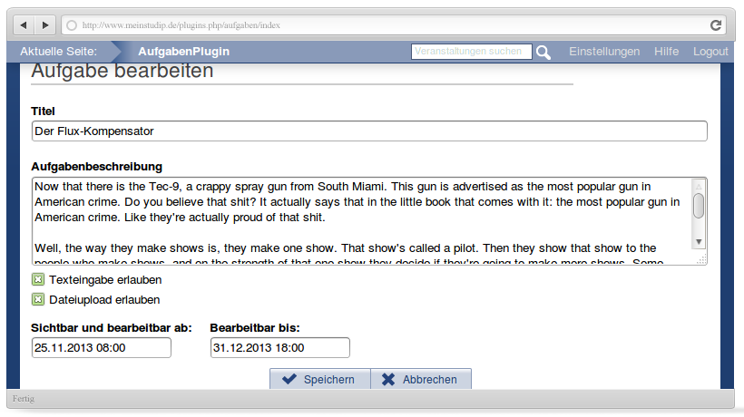

Aufgaben
Aufgaben-Plugin für Stud.IP 2.3 - 4.0
Ein Projekt von tgloeggl
Aufgaben bei GitHUB
Das neue Aufgabentool für Stud.IP!
Was kann es?
- Zeitgesteuert Aufgaben für Teilnehmende einer Veranstaltung stellen.
- Teilnehmende können Antworttexte eingeben und bequem Dateien einreichen.
- Es kann Feedback ebenfalls in Textform oder mittels Dateien erfolgen.
- Der spezielle Uploader erlaubt das Hochladen von beliebig vielen Dateien auf einen Knopfdruck!
Aufgabenübersicht

- Studierende sehen auf einen Blick welche Aufgaben noch ausstehen
- Dozenten haben einen einfachen Überblick über bereits angelegte Aufgaben und deren Terminierung.
- Bei jeder Aufgabe ist der Bearbeitungs- und Feedbackstand einsehbar.
- Wenn die Liste mal länger wird, kann man bequem nach einzelnen Spalten sortieren.
Aufgabe erstellen
- Man kann wahlweise Texteingabe und/oder Dateiupload gestatten.
- Nach verstreichen des Startzeitpunkts werden die Aufgaben automatisch für Studierende sichtbar.
Aufgabendetails

- Bei jeder Aufgabe erhält man einen Überblick über abgegebene Antworten und Dateien.
Dateien hochladen

- Mit dem integrierten modernen Uploader ist es problemlos möglich viele Dateien auf einen Knopfdruck hochzuladen.